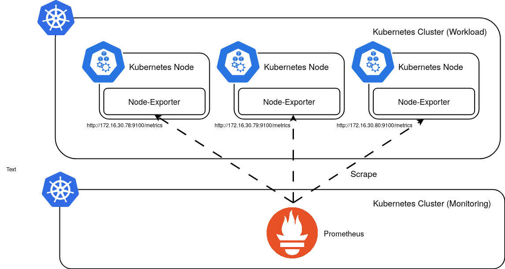
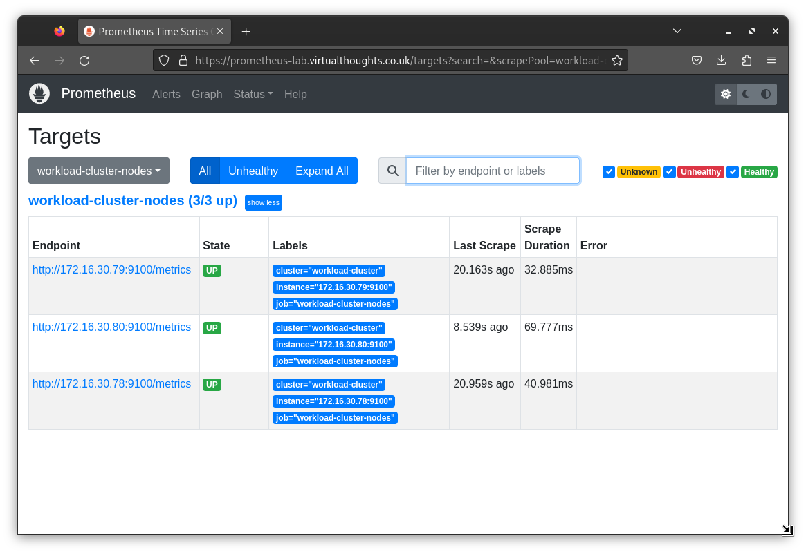
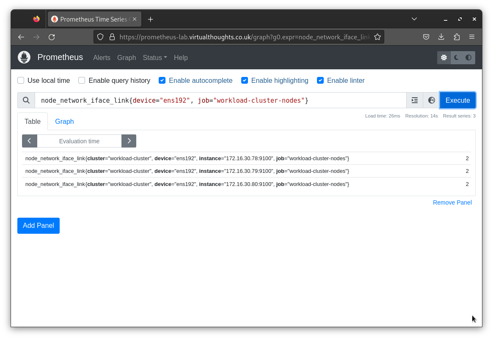

Scrape Configuration
Using the Prometheus Operator, ServiceMonitor and PodMonitor are standard abstractions for service discovery within
a Kubernetes cluster. However, in this example, we are scraping metrics from external nodes.
Two ways to approach this include:
- Modifying the
Prometheusyaml file and directly injecting additional scrape configs - Modifying the
Prometheusyaml file and reference an existing secret withadditionalScrapeConfigs
For this example, the latter is used as a provides a less error-prone and scalable way to manage additional scrape configurations.
Additional Scrape config
This scrape configuration references the three nodes in the Workload cluster. In addition, a label is automatically created that identifies the cluster these nodes reside in. This is helpful to distinguish these metrics from other nodes that may be scraped for similar metrics in the future.
- job_name: 'workload-cluster-nodes'
static_configs:
- targets:
- '172.16.30.79:9100'
- '172.16.30.80:9100'
- '172.16.30.78:9100'
labels:
cluster: 'workload-cluster'Create Secret
kubectl create secret generic additional-scrape-configs --from-file=node-exporter-scrape.yaml --dry-run=client -oyaml > additional-scrape-configs.yaml
kubectl apply -f additional-scrape.yamlModify Prometheus Instance with additionalScrapeConfigs
To include this scrape configuration we need to modify the corresponding Prometheus object:
apiVersion: monitoring.coreos.com/v1
kind: Prometheus
spec:
additionalScrapeConfigs:
key: node-exporter-scrape.yaml
name: additional-scrape-configsWe can visualise this configuration with the following:

Validate Scrape Config
From the Prometheus UI, we can validate the scrape configuration is configured and working as expected:

From the Prometheus UI, we can validate metrics have been scraped with a simple PromQL query:
Test Scrape Config
